Autonomous System Performance KPIs
Real-Time AI Forecasting
Initializing live feed...
AI Predicted
-- °C
Actual (Live)
-- °C
Drift Error
-- °C
Last updated: --
Model Maturity & Synchronization Health
Status: Baseline Complete
Data: 2001-2024 | Trained: 2001-2019 | Tested: 2020-2024
Analyzing System State...
The Drift Analysis module is inspecting the backend model repository for synchronization.
Historical & Predictive Analysis Suite
This interactive suite validates the project's AI models across any timeframe. Select any region and date to see the system autonomously transition between Verified Historical Archives and AI RESEARCH FORECASTS. It uses a 20-year climatological baseline to prove the model's reliability across full seasonal cycles, bridging past results with future projections.
Temporal Stability & Concept Drift Analysis
This chart tracks the daily MAE error limits of the two Elite Models (Optimized XGBoost vs Neural Network). It proves self-healing capabilities as the Live Catch-Up Engine retrains daily.
Base Models Comparison
Random Forest
Loading...
Deep Neural Network (MLP)
Loading...
XGBoost
Loading...
Superior High-Performance Architectures
Optimized Neural Network
Loading...
Optimized XGBoost (CV Tuned)
Loading...
Model Comparison (MAE vs R²)
A consolidated view of performance across tuned models, comparing error margins and goodness-of-fit.
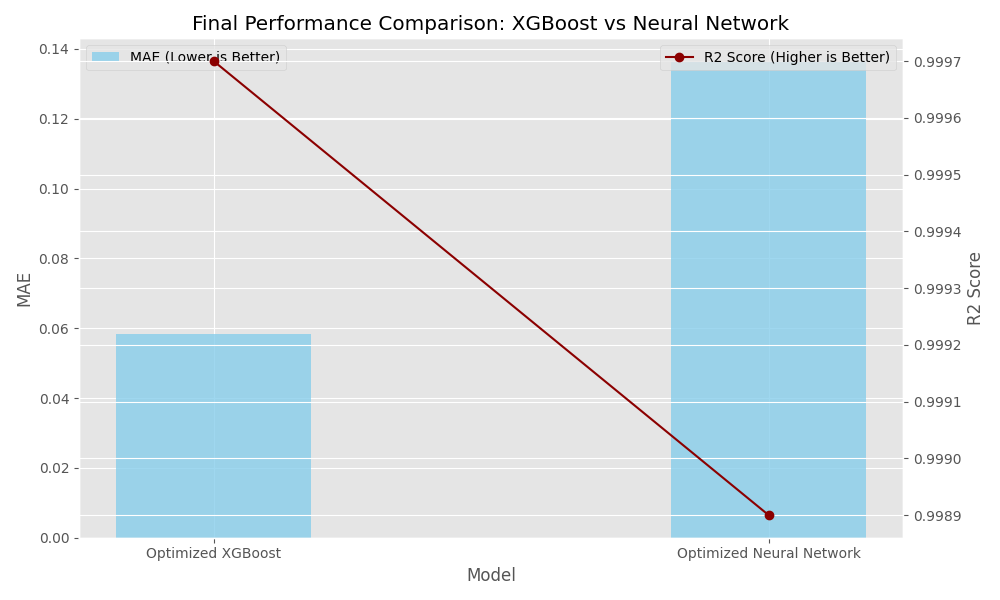
{kind=link}
Residual Distribution (Error Analysis)
Analyzing the prediction errors (Actual - Predicted). A narrow, centered curve proves model stability.
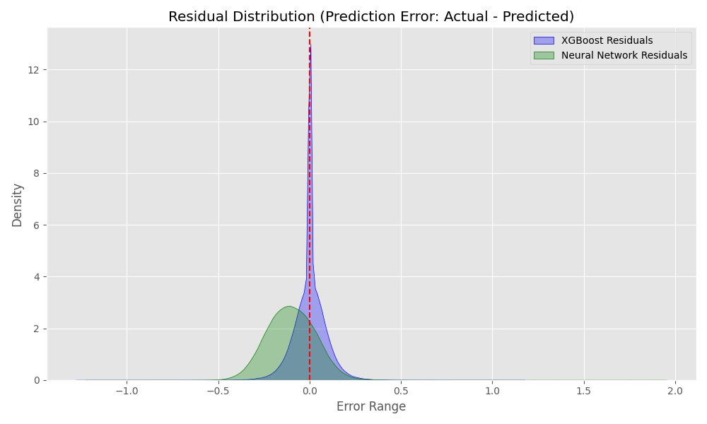
{kind=link}
Actual vs Predicted (Accuracy Plot)
Visualizing how close predictions follow the 1:1 perfect line. Tighter grouping indicates higher precision.
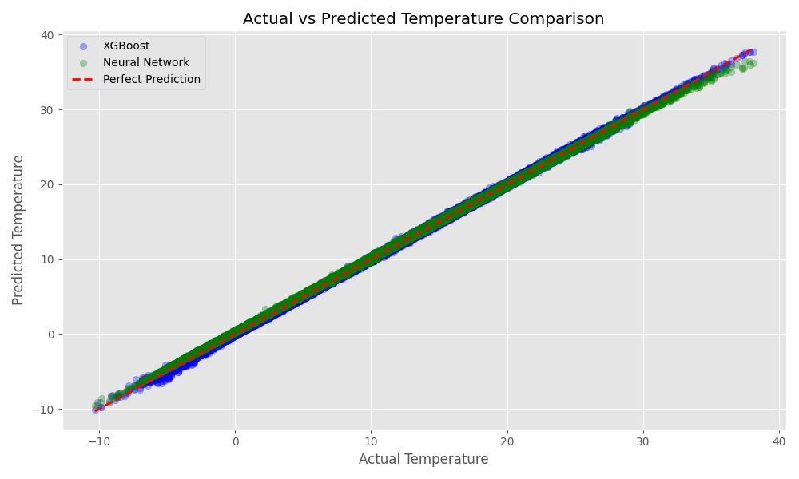
{kind=link}
Optimized Feature Importance
The primary features driving the optimized results, showing the impact of historical lags and rolling means.
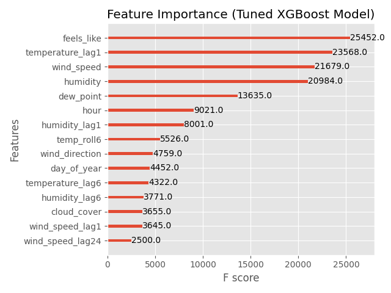
{kind=link}
AI Decision Making (SHAP Analysis)
Explaining how the ML model makes its predictions (e.g., proving that "lag temperature" or "humidity" drives the output), solving the black-box problem.
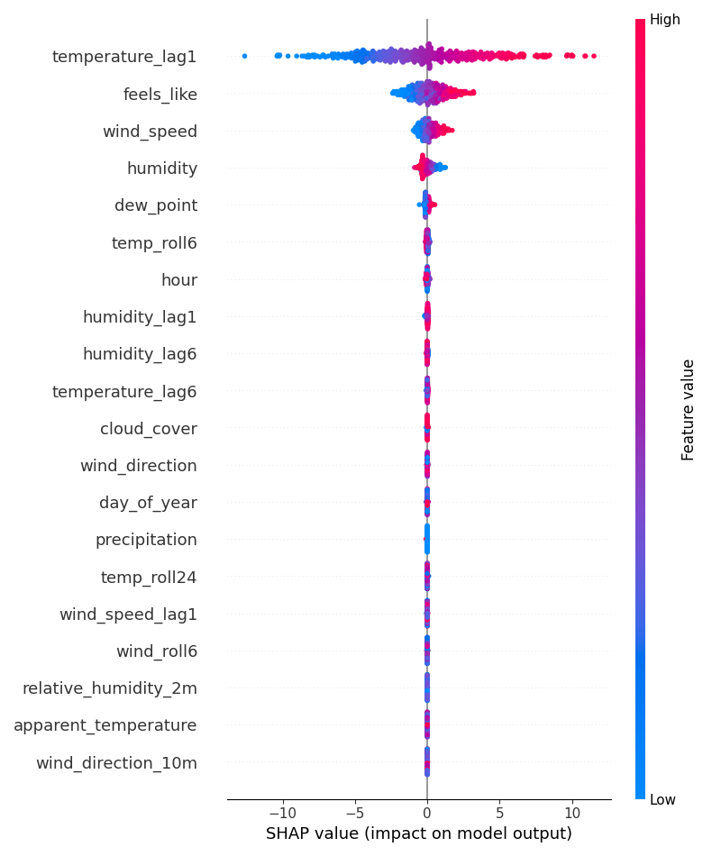
{kind=link}
Native Feature Importance (F-Score)
The pure XGBoost calculated weight of each scientific feature in determining the model's split decisions.
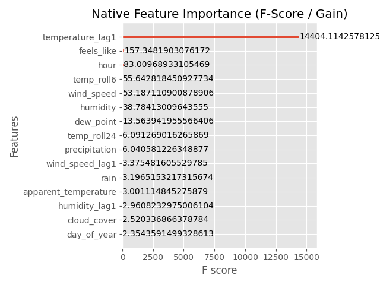
{kind=link}
Neural Core Retraining Interface
Live snapshots of the machine learning pipeline's daily outputs. These files are updated autonomously by the run.py engine every 24 hours.
24-Hour Autonomous Daemon Active
The Live Catch-Up Engine automatically fetches Open-Meteo data every 5 minutes and recalculates Neural Network / XGBoost drift matrices daily at 00:00.
NEXT SCHEDULED SYNC: --:--:--
Data Downloads & Inspection
Direct access to the backend data files used by the pipeline.
Note: Browsers block local file access for security. The run.py launcher and its background server already handle this for you securely.
Data Analysis Gallery
Feature Correlation Analysis
A heatmap showing how different weather signals (like temperature and precipitation) move together. High correlation helps the model identify redundancies.
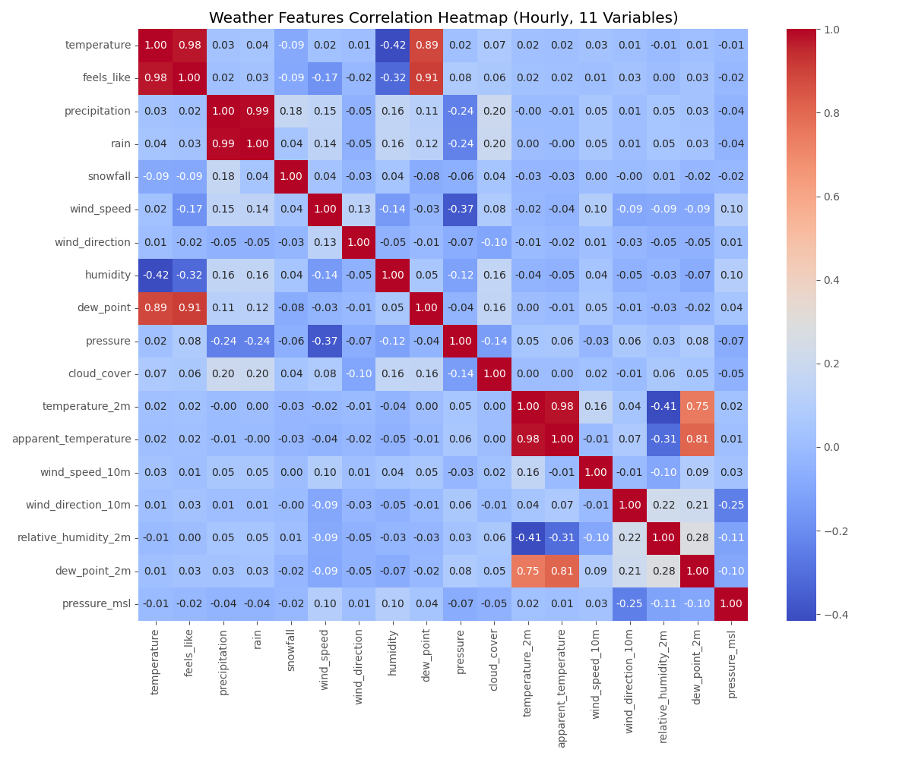
{kind=link}
Regional Temperature Trends
Historical temperature patterns across 10 UK cities over the last decade, used to capture regional seasonality.
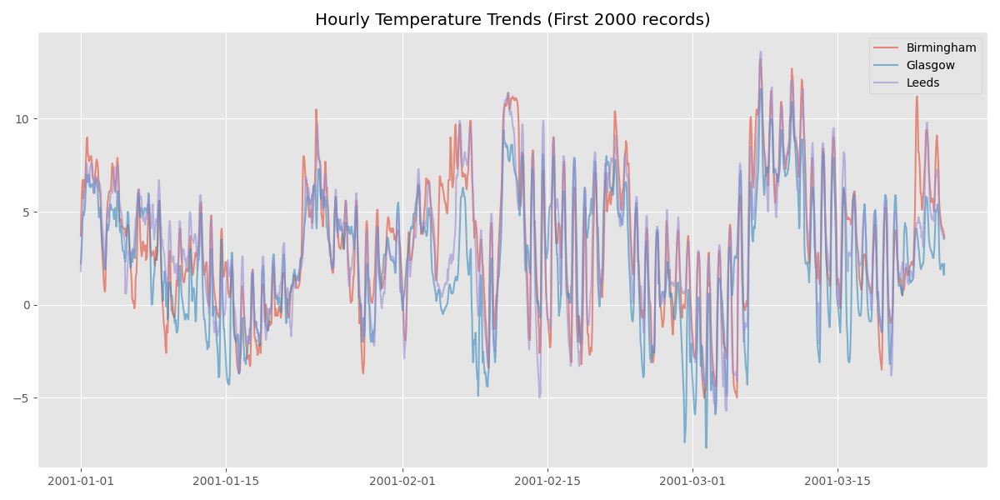
{kind=link}
Feature Missing Values (Before Imputation)
A diagnostic audit showing where data points were missing from the API. Our pipeline automatically cleaned these gaps during training.
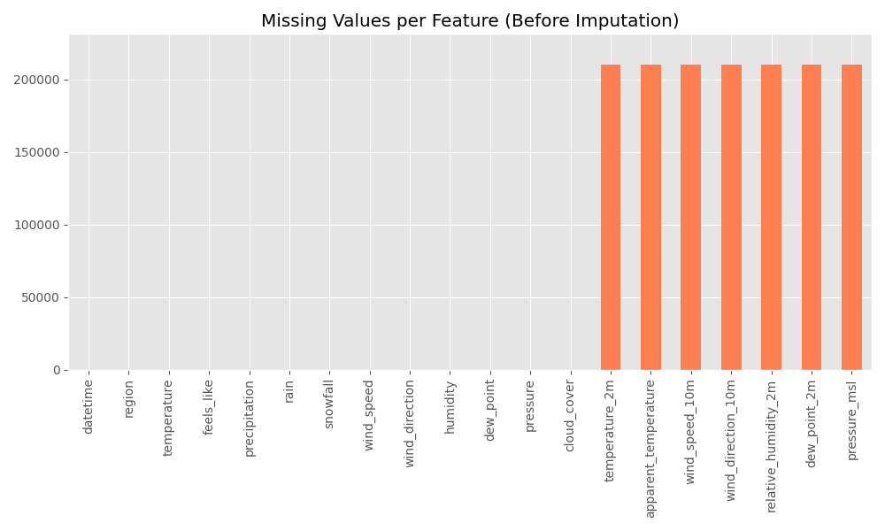
{kind=link}
Extreme Weather Anomalies (|Z| > 3.0)
Using Z-score mathematics to find days where the weather was 'impossible' or extremely rare (e.g., severe heatwaves or unexpected cold snaps).
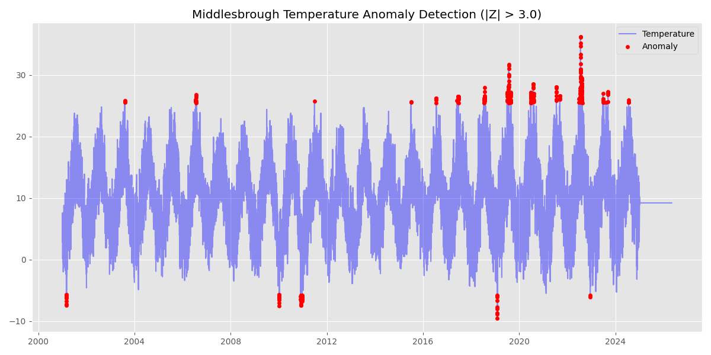
{kind=link}
Multi-City Extreme Weather Anomalies (|Z| > 3.0)
Using Z-score mathematics across 10 UK regions to find days where the weather was 'impossible' or extremely rare.
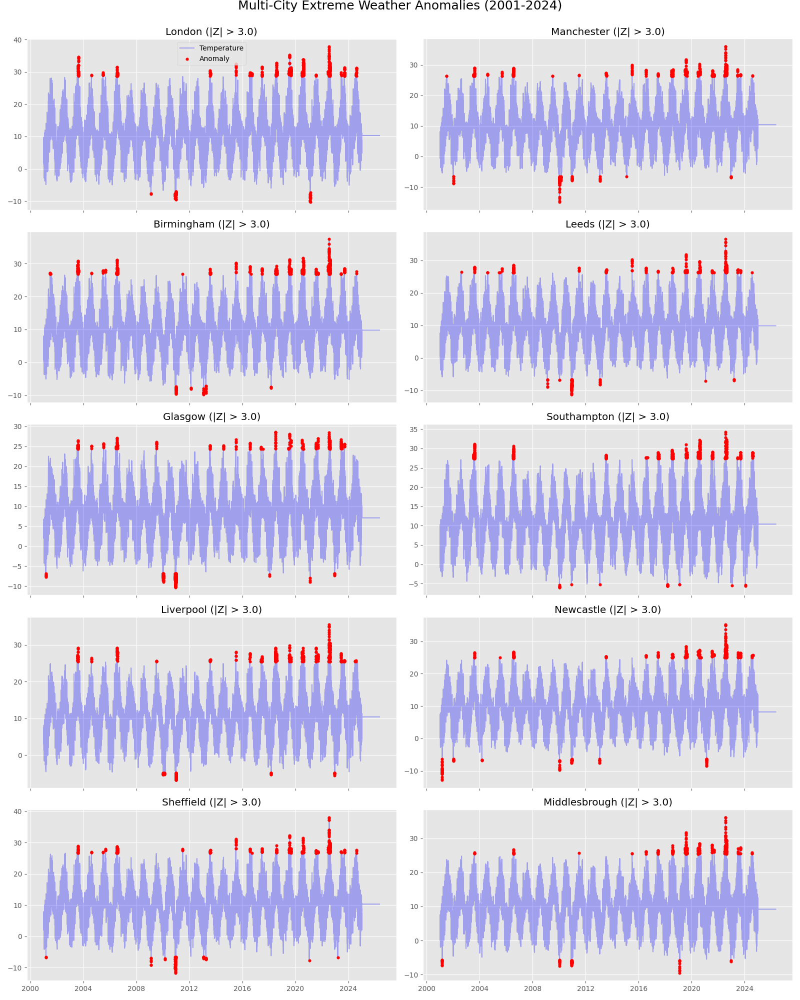
{kind=link}
14-Day Scientific Validation (AI vs Open-Meteo GFS)
Demonstrating the short-term accuracy boundaries of our deterministic ML models compared against the global Open-Meteo European Centre baseline models (ECMWF & GFS) for the next 14 days.
Neural Network vs. Baseline
XGBoost Ensemble vs. Baseline
External Benchmarking & Physical Verification
Cross-reference our neural predictions with real-world atmospheric maps on Ventusky.
External Physical Verification (Ventusky)